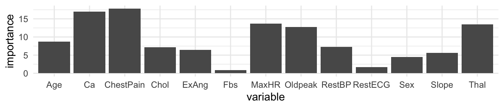
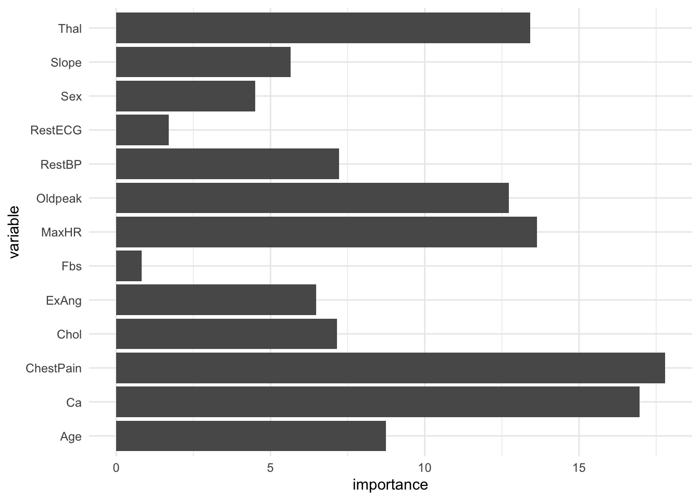
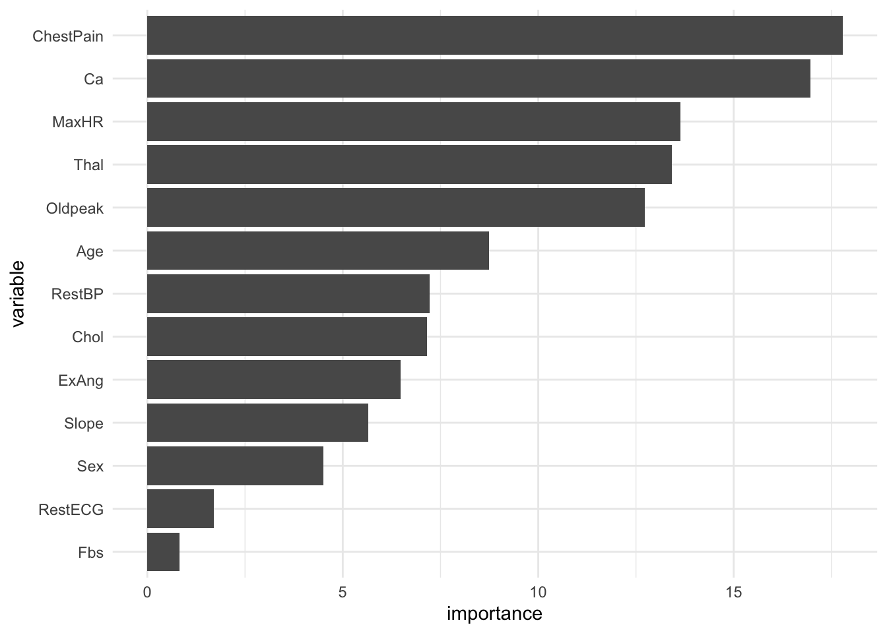

Boosting Decision Trees and Variable Importance
Boosting
Like bagging, boosting is an approach that can be applied to many statistical learning methods
We will discuss how to use boosting for decision trees
Bagging
- resampling from the original training data to make many bootstrapped training data sets
- fitting a separate decision tree to each bootstrapped training data set
- combining all trees to make one predictive model
- ☝️ Note, each tree is built on a bootstrap dataset, independent of the other trees
Boosting
- Boosting is similar, except the trees are grown sequentially, using information from the previously grown trees
Boosting algorithm for regression trees
Step 1
- Set \(\hat{f}(x)= 0\) and \(r_i= y_i\) for all \(i\) in the training set
Boosting algorithm for regression trees
Step 2 For \(b = 1, 2, \dots, B\) repeat:
Fit a tree \(\hat{f}^b\) with \(d\) splits ( \(d\) + 1 terminal nodes) to the training data ( \(X, r\) )
Update \(\hat{f}\) by adding in a shrunken version of the new tree: \(\hat{f}(x)\leftarrow \hat{f}(x)+\lambda \hat{f}^b(x)\)
Update the residuals: \(r_i \leftarrow r_i - \lambda \hat{f}^b(x_i)\)
Boosting algorithm for regression trees
Step 3
- Output the boosted model \(\hat{f}(x)=\sum_{b = 1}^B\lambda\hat{f}^b(x)\)
Big picture
Given the current model, we are fitting a decision tree to the residuals
We then add this new decision tree into the fitted function to update the residuals
Each of these trees can be small (just a few terminal nodes), determined by \(d\)
Instead of fitting a single large decision tree, which could result in overfitting, boosting learns slowly
Big Picture
By fitting small trees to the residuals we slowly improve \(\hat{f}\) in areas where it does not perform well
The shrinkage parameter \(\lambda\) slows the process down even more allowing more and different shaped trees to try to minimize those residuals
Boosting for classification
Boosting for classification is similar, but a bit more complex
tidymodelswill handle this for us, but if you are interested in learning more, you can check out Chapter 10 of Elements of Statistical Learning
Tuning parameters
With bagging what could we tune?
\(B\), the number of bootstrapped training samples (the number of decision trees fit) (
trees)It is more efficient to just pick something very large instead of tuning this
For \(B\), you don’t really risk overfitting if you pick something too big
Tuning parameters
With random forest what could we tune?
The depth of the tree, \(B\), and
mthe number of predictors to try (mtry)The default is \(\sqrt{p}\), and this does pretty well
Tuning parameters for boosting
- \(B\) the number of bootstraps
- \(\lambda\) the shrinkage parameter
- \(d\) the number of splits in each tree
Tuning parameters for boosting
What do you think you can use to pick \(B\)?
Unlike bagging and random forest with boosting you can overfit if \(B\) is too large
Cross-validation, of course!
Tuning parameters for boosting
The shrinkage parameter \(\lambda\) controls the rate at which boosting learn
\(\lambda\) is a small, positive number, typically 0.01 or 0.001
It depends on the problem, but typically a very small \(\lambda\) can require a very large \(B\) for good performance
Tuning parameters for boosting
The number of splits, \(d\), in each tree controls the complexity of the boosted ensemble
Often \(d=1\) is a good default
brace yourself for another tree pun!
In this case we call the tree a stump meaning it just has a single split
This results in an additive model
You can think of \(d\) as the interaction depth it controls the interaction order of the boosted model, since \(d\) splits can involve at most \(d\) variables
Boosted trees in R
- Set the
modeas you would with a bagged tree or random forest tree_depthhere is the depth of each tree, let’s set that to 1
treesis the number of trees that are fit, this is equivalent toBlearn_rateis \(\lambda\)
Make a recipe
xgboostwants you to have all numeric data, that means we need to make dummy variables- because
HD(the outcome) is also categorical, we can useall_nominal_predictorsto make sure we don’t turn the outcome into dummy variables as well
Fit the model
Boosting
How would this code change if I wanted to tune B the number of bootstrapped training samples?
06:00
Boosting
Fit a boosted model to the data from the previous application exercise.
Variable Importance
Variable importance
For bagged or random forest regression trees, we can record the total RSS that is decreased due to splits of a given predictor \(X_i\) averaged over all \(B\) trees
A large value would indicate that that variable is important
Variable importance
- For bagged or random forest classification trees we can add up the total amount that the Gini Index is decreased by splits of a given predictor, \(X_i\), averaged over \(B\) trees
Variable importance in R
rf_spec <- rand_forest(
mode = "classification",
mtry = 3
) |>
set_engine(
"ranger",
importance = "impurity")
wf <- workflow() |>
add_recipe(
recipe(HD ~ Age + Sex + ChestPain + RestBP + Chol + Fbs +
RestECG + MaxHR + ExAng + Oldpeak + Slope + Ca + Thal,
data = heart)
) |>
add_model(rf_spec)
model <- fit(wf, data = heart)Variable importance
Age Sex ChestPain RestBP Chol Fbs RestECG
8.7373472 4.5105528 17.7851030 7.2272113 7.1527794 0.8194267 1.7009556
MaxHR ExAng Oldpeak Slope Ca Thal
13.6394810 6.4843562 12.7223699 5.6545429 16.9625611 13.4255965 Plotting variable importance

How could we make this plot better?
Plotting variable importance

How could we make this plot better?
Plotting variable importance


Dr. Lucy D’Agostino McGowan adapted from slides by Hastie & Tibshirani